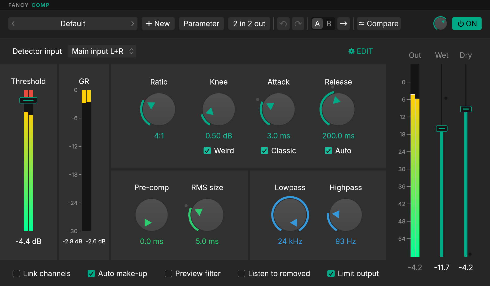
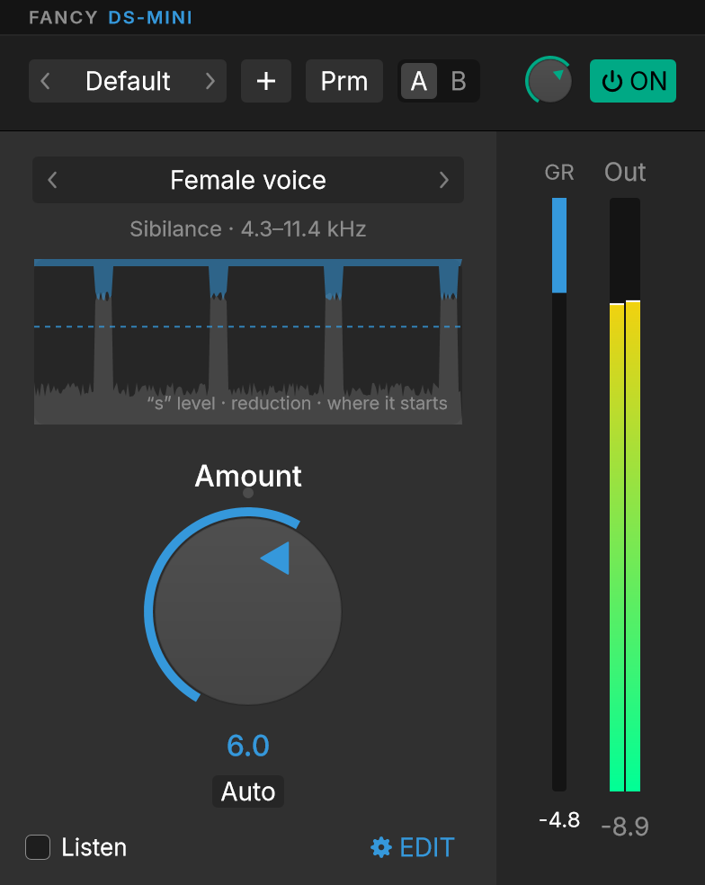
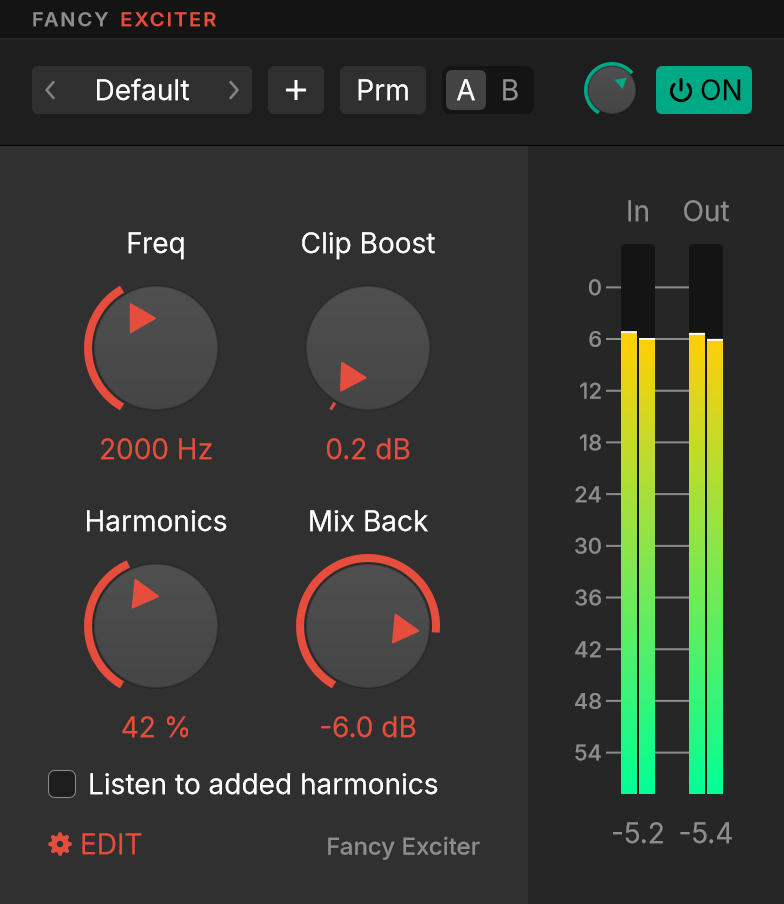
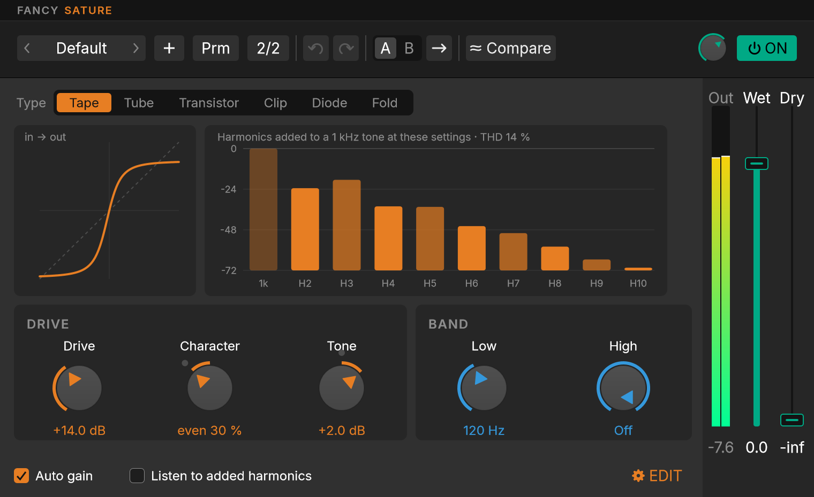
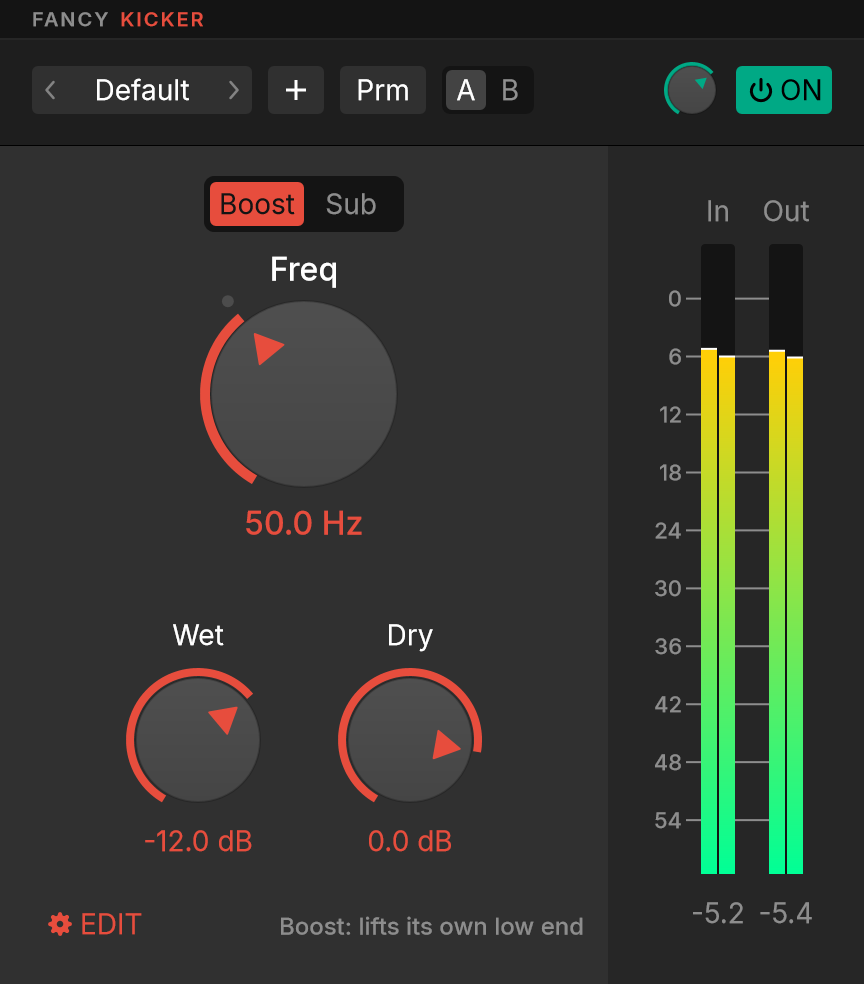
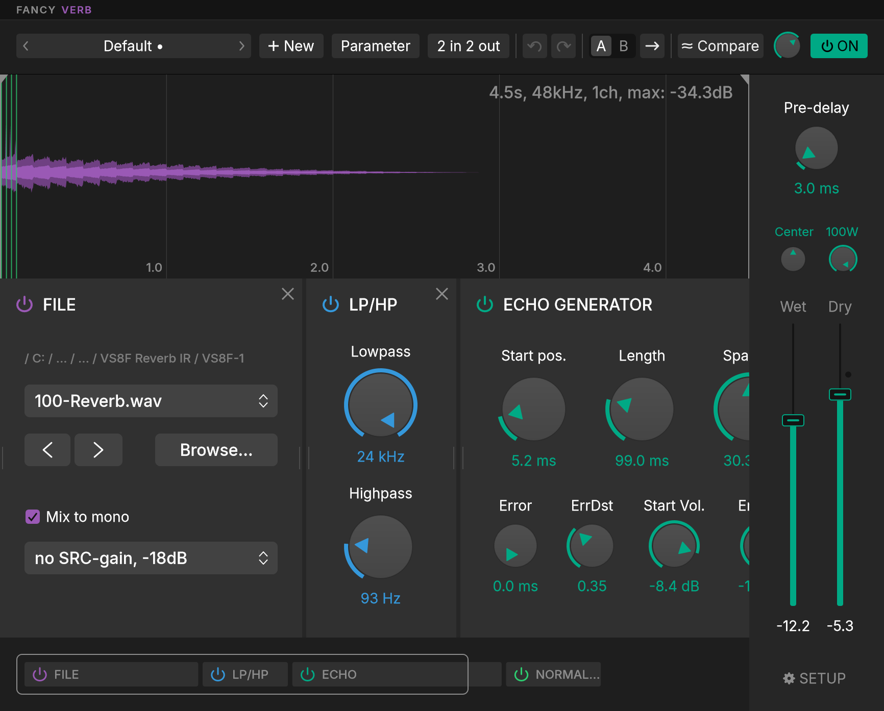
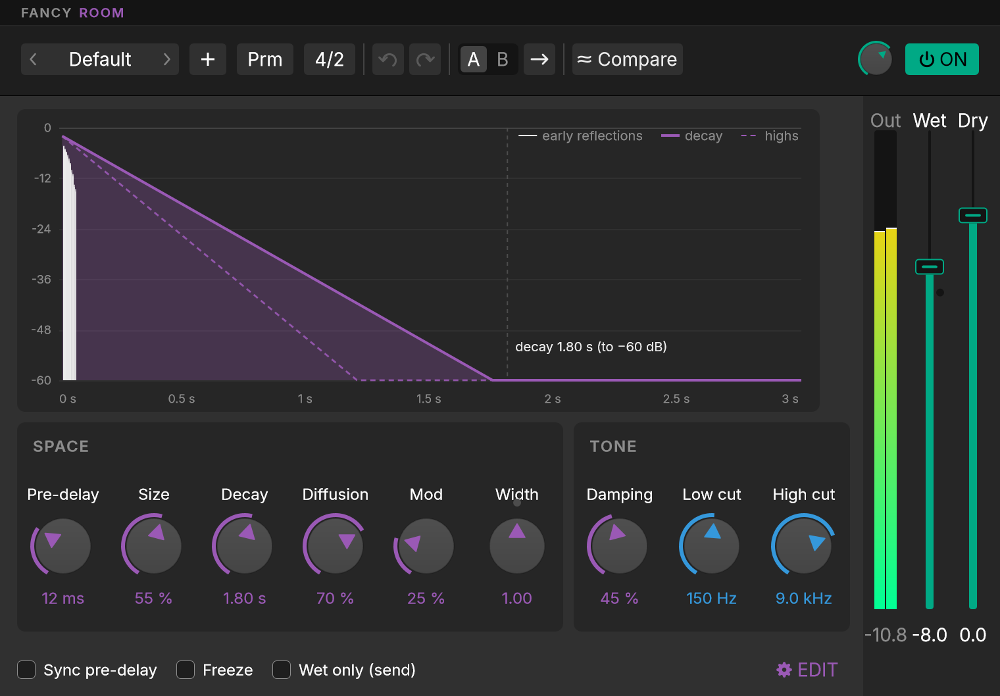
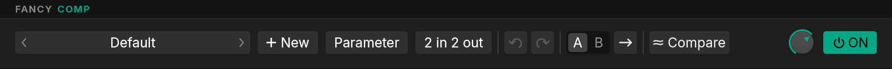

Free effects for the whole mix: dynamics, tone and space.
Fourteen plugins for Windows and Mac that all work the same way. Learn one window and you know them all.

Dynamics
Plugins that react to level: they turn things down, or up, when the sound gets louder or quieter.
Fancy Comp
Compressor. The threshold sits on the input meter, with a filtered detector and a sidechain.

Fancy MultiComp
Multiband compressor. Up to 8 bands of compression that sum back flat.

Fancy Gate
Gate, ducker and trigger. Closes between hits, ducks from a sidechain and sends MIDI.

Fancy Limit
True-peak limiter. Holds a master under a ceiling, with a loudness meter beside it.

Fancy DS
De-esser. Turns down “s” sounds only while they’re too loud.

Fancy DS-Mini
One-knob de-esser. The same engine as Fancy DS, behind one knob.
Tone
Plugins that change the colour of a sound: which frequencies are loud, and what the sound is made of.

Fancy EQ
Parametric equalizer. Up to 24 bands on a live analyzer, with dynamic bands, mid/side and Match.

Fancy FIR
Spectral processor. Removes steady noise and ringing, or draws an EQ freehand.

Fancy Exciter
Harmonic exciter. Adds brightness above a frequency you choose.

Fancy Sature
Saturator. Tape, Tube, Transistor and Clip colour at a steady level.

Fancy Kicker
Low-end enhancer. Swells a kick’s own note, or adds a sub below it.
Space and time
Plugins that add echoes and rooms around a sound.

Fancy Delay
Multi-tap delay. Up to 16 taps, in time with the song.

Fancy Verb
Convolution reverb. Real spaces from 32 built-in impulse responses, or your own files.

Fancy Room
Algorithmic reverb. From a small room to a long hall, with Freeze.
One window, fourteen times
Every plugin opens with the same strip and header, so what you learn in one works in the rest.

New in 1.6.0
Fancy FIR has a Resonance mode. It finds narrow peaks that stand above the spectrum around them, such as a ringing snare or a boxy vocal, and turns each one down only while it’s there.
Projects saved with 1.0 to 1.5 load and sound exactly as before.
Download Fancy Plugs 1.6.0
All fourteen plugins in one zip, free to download and use. VST3 for Windows 10 and 11 (x64). On a Mac: VST3 and Audio Unit for macOS 11 or later, Intel and Apple silicon, as a beta. The installer copies them to your own folders and needs no administrator password.